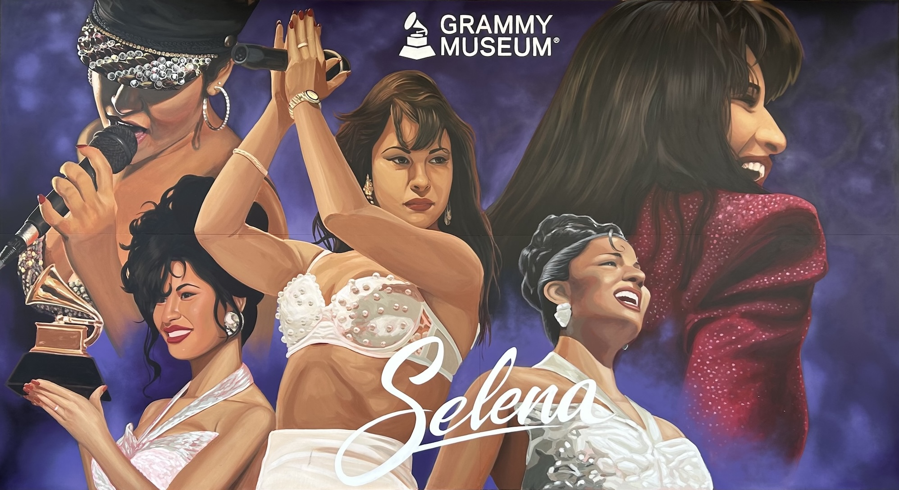
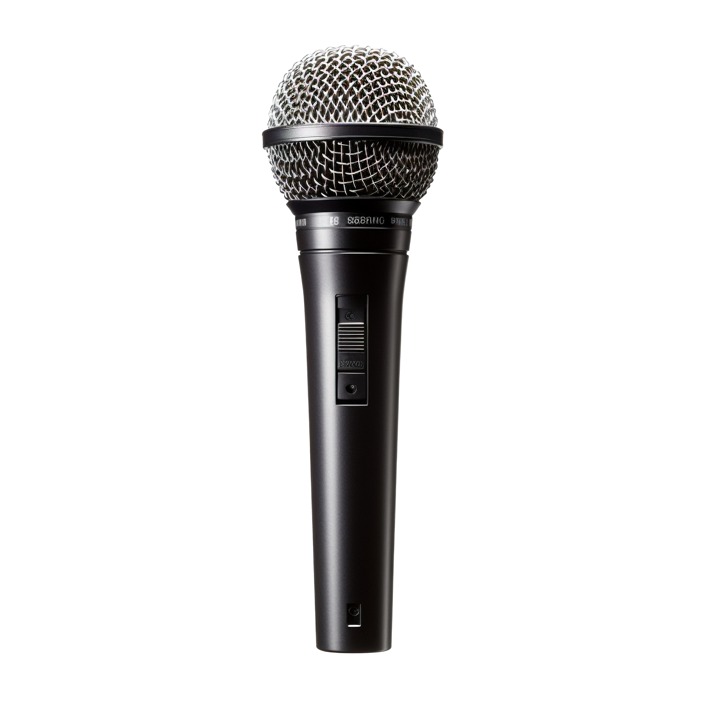

Selena's rise to fame was like a shooting star: she was brilliant and inspiring, but her life was brief. Despite her untimely end, Selena's memory and music continue to inspire a generation of Latina/o fans.
Selena Quintanilla was born in 1971 in Lake Jackson, Texas, and she was performing Tejano music with her Mexican-American family around the state at a very young age. By her teens she was on the rise to stardom, and soon her music was hitting the charts. Sometimes called the "Queen of Tejano," Selena's music expanded the audience for Texan-Mexican music, and contributed to a rise in Latin music popularity across the United States. Selena's album Selena Live! won a Grammy Award in 1994, making her the first Tejano artist to win a Grammy. But on March 31, 1995, Selena was killed by a woman who was the ex-president of her fan club the former business manager of her boutique. A final album was released in the month after her death, Dreaming of You, and she became the first music artist to have five Spanish albums simultaneously on the Billboard 200 list.
In the years since her death on March 31, 1995, Selena Quintanilla-Pérez has been commemorated as a lasting cultural icon, with her legacy honored through numerous tributes and accolades.
{kind=link}
{kind=link}